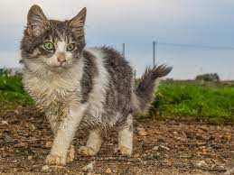
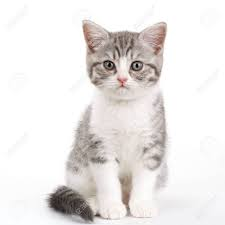
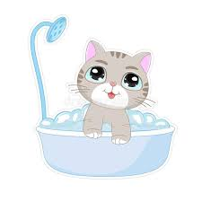
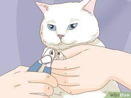
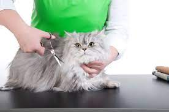
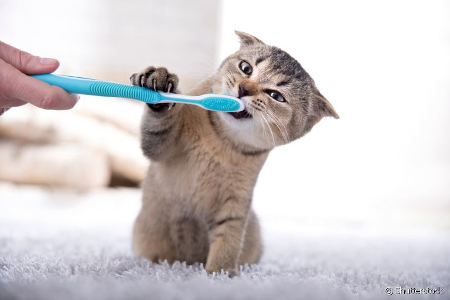
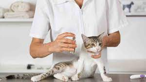

Los gatos son extremadamente limpios. De hecho, ponen en práctica un ritual por el que se acicalan cada vez que se notan sucios o cuando perciben que no están lo suficientemente coquetos. Y es que conviene recordar que los gatos no suelen ser grandes amantes del agua, pese a que hay excepciones. Cabe destacar que el pelaje del gato es el signo externo del animal que mejor refleja su belleza, pero también su estado de salud. Pese a los mitos, esta parte del cuerpo requiere de una serie de cuidados que influyen directamente en su bienestar, por lo que debemos ser especialmente cuidadosos con el aseo de los gatos
|  |  |
EL COSTO VARIA DEPENDE AL ESTADO DEL PELO DEL GATO PERO EL PRESUPUESTO ES ENTRE 30Bs a 50Bs
|  |  |  |  |  |